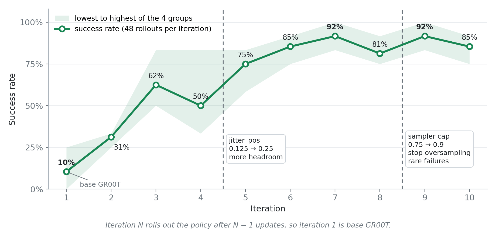
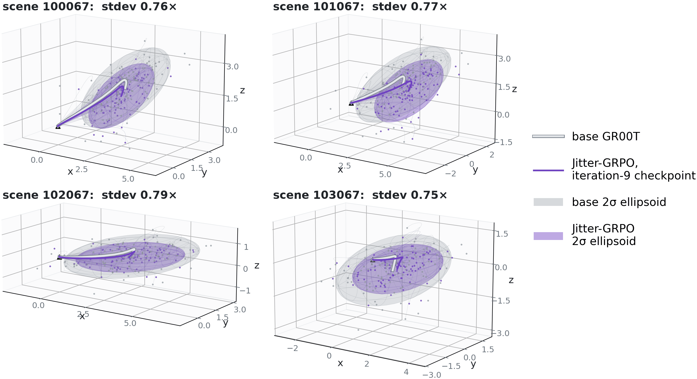
┌───────────────┬─ re-plan with new observations ───┐ │ ▼ ▼ │ 3 cameras + instruction state (16-d) │ │ │ │ ▼ ▼ │ ┌───────────────────────────┐ state encoder │ │ Eagle VLM (1.9B, frozen) │ │ 1 token │ │ SigLIP2 + Qwen3-1.7B │ │ │ └────────────┬──────────────┘ │ │ │ VL tokens (cross-attention) │ │ ▼ ▼ │ ┌─────────────────────────────────────────────────────┐ │ │ DiT action head (1.1B, 32 blocks, LoRA) │◄──┐ │ │ 51 tokens = 1 state + 50 action │ │ │ └──────────────────────────┬──────────────────────────┘ │ │ ▼ │ │ action decoder action encoder │ │ velocity v ▲ │ ▼ │ │ a ← a + v/n ─────────── a ───────────┘ │ │ a starts as noise; │ │ a is complete after n=4 steps │ ▼ │ action chunk: 16 steps × 12-d │ │ │ ▼ └──────── robosuite OSC controller: execute 8 steps
| Signal | Notes | |
|---|---|---|
| Cameras (3 × 256×256×3) | Left & right exocentric views (2 × 256×256×3); wrist egocentric view (256×256×3) | Rendered at 512×512, resized to 256×256 |
| State (16-d) | End-effector position (3-d) & quaternion (4-d) relative to the base; gripper finger positions (2-d); base position (3-d) & quaternion (4-d) | No joint angles or velocities |
| Language | "pick the mug from under the coffee machine dispenser and place it on the counter" | Fixed throughout episode |
| Action (16 × 12-d) | End-effector Δposition (3-d) & Δrotation (3-d, axis-angle); gripper open/close (1-d); base velocity (3-d) & torso height (1-d); arm/base mode (1-d) | Operational space control (OSC) deltas, not joint angles or torques |
to_q, to_k, to_v, to_out
and both feed-forward projections (6 modules).proj_out_1 (scale/shift of the final AdaLayerNorm) and proj_out_2
(projection into the action decoder).
═══════════════ ×32 BasicTransformerBlock ═══════════════
hidden_states [B, 51, 1536] ──────────────────┐ (skip)
│ │
▼ │
norm1 = AdaLayerNorm(1536) ◄── silu(temb) │
│ .linear 1536 → 3072 → scale, shift │
# │ ^ frozen, not a LoRA target │
│ .norm LayerNorm (no affine) │
▼ │
┌──────── SELF / CROSS ATTENTION ────────┐ │
+ │ attn1.to_q 1536 → 1536 │ │
+ │ attn1.to_k 1536* → 1536 │ │
+ │ attn1.to_v 1536* → 1536 │ │
+ │ attn1.to_out.0 1536 → 1536 │ │
# │ even: cross-attend VL tokens │ │
# │ (idx%4==0 text, idx%4==2 image) │ │
# │ odd: self-attend │ │
└────────────────────────────────────────┘ │
▼ │
(+) residual ◄───────────────────────────────┤ (skip)
▼ │
norm3 = LayerNorm(1536) │
┌───────── FEED FORWARD (GELU) ──────────┐ │
+ │ ff.net.0.proj 1536 → 6144 │ │
+ │ ff.net.2 6144 → 1536 │ │
└────────────────────────────────────────┘ │
▼ │
(+) residual ◄───────────────────────────────┘
═════════════════════════════════════════════════════════
# * 2048 → 1536 in cross-attention blocks
# 6 LoRA modules × 32 blocks = 192 modules
hidden_states [B, 51, 1536] (after 32 blocks)
│
▼
┌─── FINAL AdaLayerNorm (inline in DiT.forward) ───┐
│ norm_out = LayerNorm(1536, no affine) │
# │ │ the barrier: strips mean & scale, │
# │ │ so a block ΔW that only rescales │
# │ │ the residual stream is erased │
│ │ silu(temb) │
│ │ │ │
+ │ │ proj_out_1 1536 → 3072 │
│ │ │ │
│ │ .chunk(2) → shift, scale │
│ ▼ ▼ │
│ norm_out(h) · (1 + scale) + shift │
# │ gain + shift on all 51 output tokens │
└──────────────────────────────────────────────────┘
▼
+ proj_out_2 1536 → 1024 (output projection)
▼ [B, 51, 1024]
action_decoder (embodiment MLP, frozen)
▼ drop the state token
velocity v [B, 50, 128]
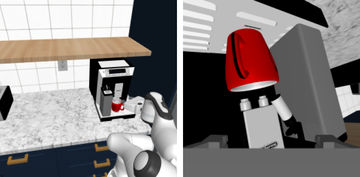
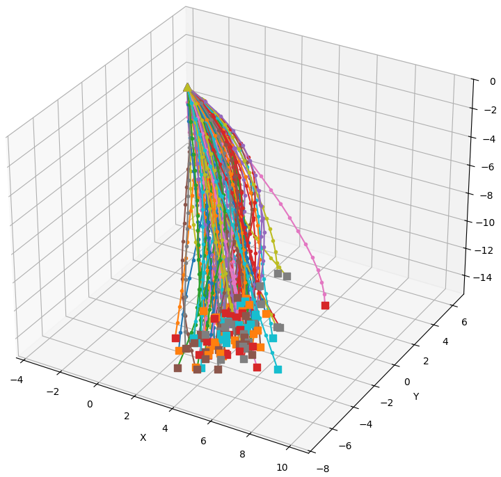
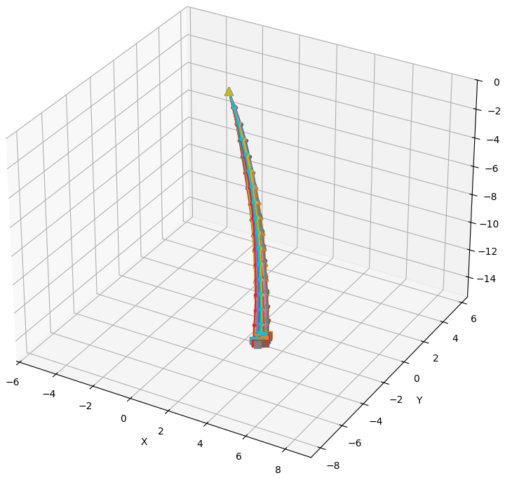
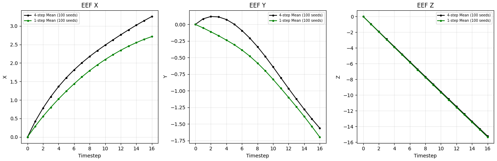
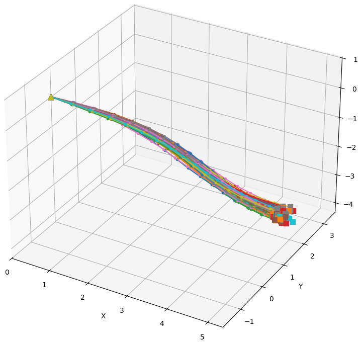
| Denoising strategy | Success, seeds 100–129 × 3 runs each |
|---|---|
| Baseline: one noise sample, 4 Euler steps | 48.9% |
| Chunk closest to the mean, 1 Euler step | 46.7% |
| Chunk closest to the mean, 4 Euler steps | 35.8% |
| Alternative | Problem on GR00T |
|---|---|
| Exact likelihood (change of variables) | ~25,600 DiT backward passes per chunk, to measure how the sampler stretches each of the 6400 noise values (50 × 128) at each of the 4 steps |
| Hutchinson trace estimate | ~12 DiT forward passes per chunk. Almost every chunk must first be run in reverse through the new sampler to recover its noise, and the estimate is noisy |
| Denoising steps as an MDP (DDPO, DPPO) | No gradient. GR00T's denoising steps are deterministic, so each step's likelihood is all-or-nothing |
| Noise injected into the sampler (Flow-GRPO, ReinFlow, πRL) | Changes the deployed sampler. Every denoising step gets extra random noise, which alters the executed actions and adds a noise level to tune (or a network to learn it) |
| FM surrogate (used here) | No problem. 6 DiT forward passes per chunk (one per $\tau_k$), under any weights; the sampler is unchanged |
| GRPO for LLMs | Jitter-GRPO | |
|---|---|---|
| Question | A prompt | One initial state (a RoboCasa kitchen) |
| Answer | A response, sampled $G$ times from the same question | A full episode rollout (many action chunks), sampled $G$ times from the same initial state |
| Reward | Terminal score of the response | Sparse (terminal) binary success at the end of the episode, $r \in \{0, 1\}$ |
| Credit | The response's advantage, broadcast to every token in the response | The episode's advantage, broadcast to every action chunk in the rollout |
jitter_pos $= \lambda$ on success rows: 0.125 to 0.4 in the experiments conducted. That jitters the noise by $\lambda^2$ = 1.6% to
16% (the share of $\varepsilon'$'s variance that is fresh noise $\xi$), leaving $\varepsilon'$ correlated with $\varepsilon$ by
$\sqrt{1 - \lambda^2}$ = 99% to 92%.jitter_neg $= 0$ on failure rows. A failure row raises its FM loss, so jittering it would also raise the endpoint
Jacobian around the failure. That objective has no upper bound (unbounded erosion), and raising it undoes the field's noise cancellation,
so noise would leak into the actions. Without jitter, failures are pushed away only at their exact $\varepsilon$.fixed before the update: o, ε, a, Â, MSE_ref (no gradient) │ ▼ ε' = sqrt(1-λ²)·ε + λ·ξ ξ ~ N(0, I), redrawn every forward pass │ λ = jitter_pos on successes, 0 on failures ▼ x' = (1-τ)·ε' + τ·a τ = one of the K = 6 values τ_k │ ▼ v_θ(x' | τ, o) DiT + LoRA ◄─────────────────────┐ │ │ ▼ │ MSE_θ = |v_θ - (a - ε')|² │ backprop: │ │ only the LoRA ▼ │ weights train ρ = exp(MSE_ref - MSE_θ) │ │ │ ▼ │ loss = -min(ρ·Â, clip(ρ, ρ_floor, 1.2)·Â) ────────┘
positive_advantage_weight_scaling compensates for the FM surrogate's inability to significantly raise a success's ratio.
Only for positive advantage chunks, the Jitter-GRPO codebase allows for more heavily weighting positive advantage chunks by $k$ below:
$$k = \mathrm{clip}\Big(\kappa\,\frac{M_-}{M_+},\ 1,\ k_{\max}\Big)$$
where $M_-$ and $M_+$ are the summed losses of the failure and success rows still passing gradient. So $k$ targets a reinforcement mass of
$\kappa$ (positive_advantage_weight_target_ratio) times the erosion mass, capped at $k_{\max}$
(positive_advantage_weight_max).
clip_low_mse_coef $= c$ gives each row its own floor, with $\epsilon_{\text{low}}$ kept as an absolute ceiling:
$$\rho_{\text{floor},i} = \exp\!\big(-\min(c \cdot \mathrm{MSE}_{\text{ref},i},\ |\ln(1 - \epsilon_{\text{low}})|)\big)$$
A failure's MSE may then grow by at most a factor of $1 + c$. The experiments use $c = 1$ (at most double) and $\epsilon_{\text{low}} = 0.005$:
| Chunk in iteration 1's buffer | $\mathrm{MSE}_{\text{ref}}$ | Allowed $\mathrm{MSE}_\theta / \mathrm{MSE}_{\text{ref}}$, flat clip ($\epsilon_{\text{low}} = 0.08$) | Allowed $\mathrm{MSE}_\theta / \mathrm{MSE}_{\text{ref}}$, relative clip ($c = 1$) |
|---|---|---|---|
| 10th percentile (well fit) | 0.00032 | 262× | 2× |
| Maximum (fit worst) | 0.0783 | 2.06× | 1.06× (ceiling binds) |
group_advantage_fixed_std: divide by a fixed 0.5 (the largest std of a 0/1 reward) instead of the group's own std. The group
std inflates nearly-solved and nearly-failed groups: a lone failure in an 11/12 group would get −3.18, against −0.96 in a 6/12 group
(−1.83 vs. −1.00 with the fixed scale). Dr. GRPO [Liu et al., 2025] drops the
std term for the same difficulty bias.per_iteration_advantage_norm: z-score chunk advantages once per iteration, not per minibatch. Each group's advantages sum to
zero, so the iteration mean is ≈ 0 and every sign survives; a per-minibatch mean, skewed by the balanced sampler, can flip a success negative.include_anchor_groups, anchor_advantage = 0.3: an all-success group has zero advantage and would be dropped by GRPO.
Anchoring gives its chunks a small constant positive advantage (without jitter), so the update keeps reinforcing scenes it already solves.
All-fail groups stay dropped, since pushing down every rollout gives no direction to move toward.| Flag | Setting | Purpose | |
|---|---|---|---|
| Group construction | group_size |
12 | Episodes per group. All episodes in a group are bit-identical copies of one initial state. |
num_groups |
4 | Groups per iteration for on-policy data collection. | |
scene_seed_pool_size, scene_seed_pool_base |
4, 100067 | Number of kitchen seeds to rotate through (only num_groups are chosen per iteration). The starting seed is user-provided, and the remaining seeds in the pool are incremented from the base. | |
| Rollout | max_episode_steps |
480 | Step budget per episode (up to 60 chunks for 8 steps/chunk) until episode forcefully terminates (failure). |
n_action_steps |
8 | Execute 8 of the 16 predicted steps, then re-plan. | |
post_reopen_keep_chunks |
1–2 | For episodes declared a failure, keep only 1–2 chunks after gripper reopen (if detected). The arm meanders after a failed grasp; this post-processing allows for higher signal-to-noise ratio when training. | |
| Minibatch construction | mask_loss_with_n_action_steps |
on | The surrogate scores only the 8 executed steps (instead of scoring all 16 steps in a chunk). |
tau_centers |
0, 0.25, 0.35, 0.5, 0.6, 0.75 | Flow times $\tau_k$ for the surrogate, each with a small random offset (std 0.02). Pre-training favored early $\tau$ (only 35% of its draws reach $\tau \ge 0.5$); these cover all four inference steps and put half the evaluations at $\tau \ge 0.5$, since I showed earlier how later Euler steps add the fan's spread (Figs. 6-8). | |
balanced_minibatch_positive_adv_ratio, _dynamic, _max |
0.5, on, 0.75–0.9 | Each minibatch's success share tracks the natural share, clamped to [0.5, max]: rare successes get oversampled, rare failures do not.
Given that we don't have a normalized probability distribution (Gaussian/softmax) that we are explicitly reweighting, an isolated negative update just degrades the field locally with no guaranteed attractor. For stable training, we need a good action's path in the same minibatch to absorb the rerouted volume, such that every minibatch has directional balance without losing data. |
|
mini_batch_size × gradient_accumulation_steps |
8 × 16 | Effective minibatch size is 128 chunks per optimizer step (learning rate 5e-5, 3 epochs per iteration). Gradient accumulation was implemented due to insufficient VRAM size on my AWS EC2 instance (NVIDIA A10G, 24 GB VRAM). |
| Method | RL on a flow model | Jacobian penalty | Rollout sampler unchanged | Fixes the surrogate's success/failure imbalance |
|---|---|---|---|---|
| Bishop, 1995; Hoffman et al., 2019 | ✗ (supervised) | ✓ | — | — |
| Flow-GRPO, ReinFlow, πRL | ✓ | ✗ | ✗ (injects noise to explore) | — (no FM surrogate) |
| FPO | ✓ | ✗ | ✓ | ✗ |
| FPO++ | ✓ | ✗ | ✓ | Failure side only |
| ReFPO | ✓ | Measured only | ✓ | ✗ |
| Jitter-GRPO | ✓ | ✓ | ✓ | ✓ |
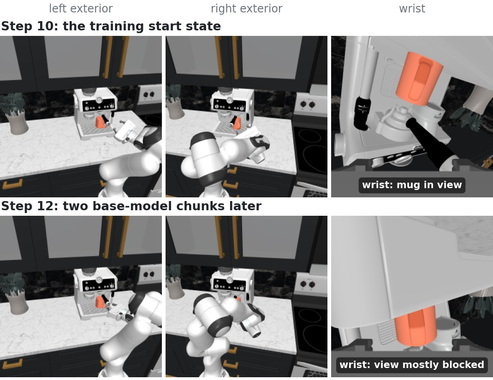
jitter_pos = 0.125, plateaued, so I resumed from its
iteration-3 checkpoint at jitter_pos = 0.25. Four times the jitter variance (1.6% → 6.25%) gives success rows more room to raise
their ratio, and the Jacobian term's gradient grows from ~15% to ~33% of the reinforcement gradient. (The iteration-4 dip is sampling noise:
the same checkpoint scored 79% when first sampled.)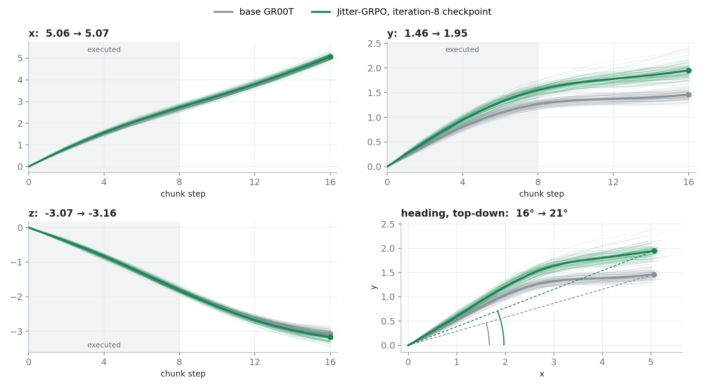
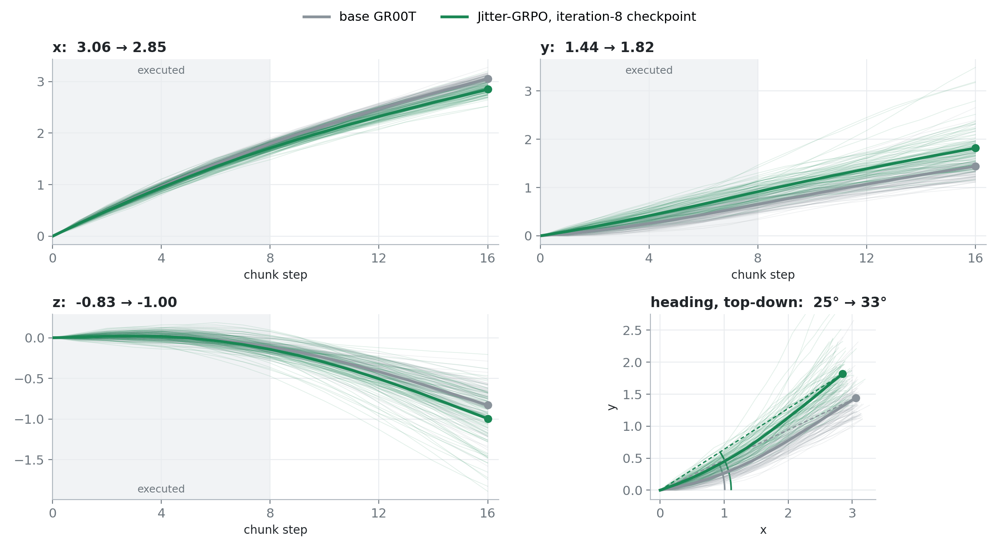
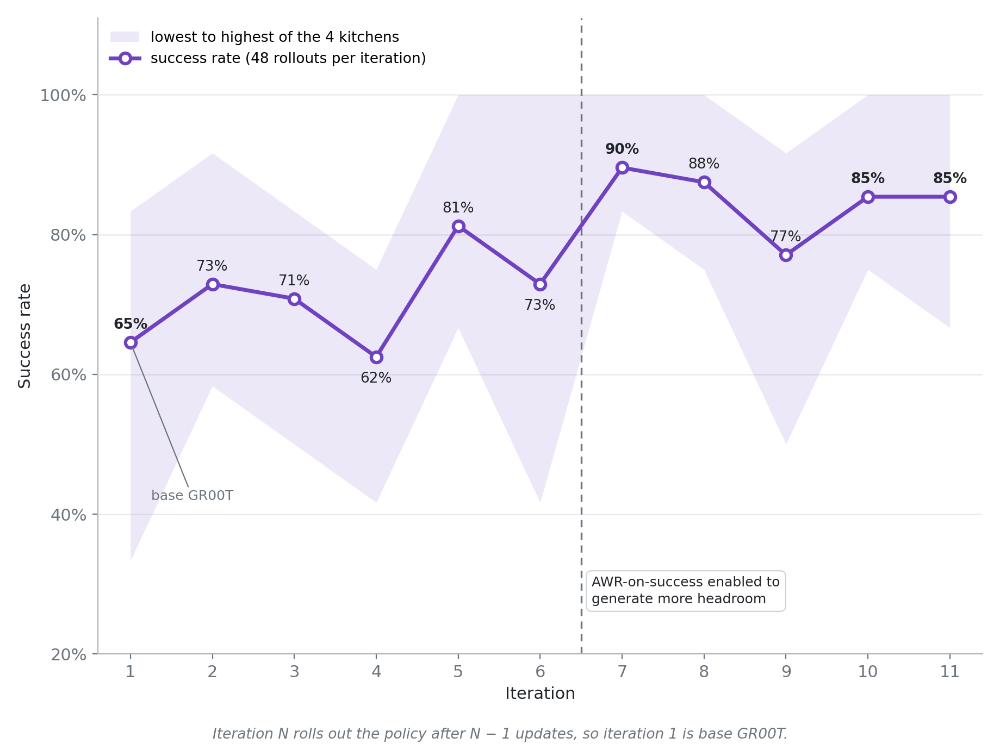
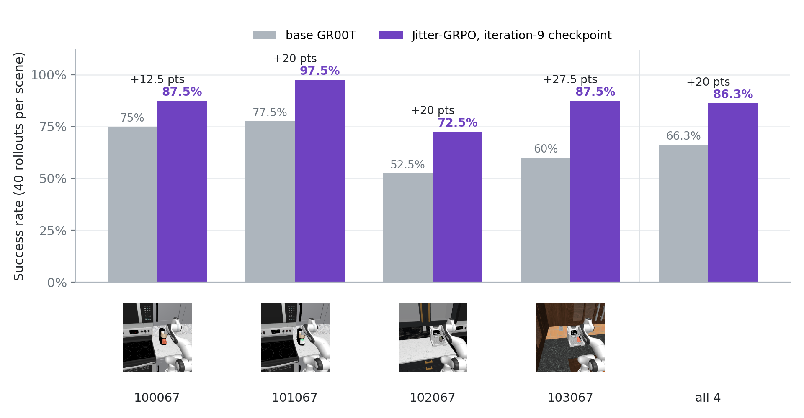
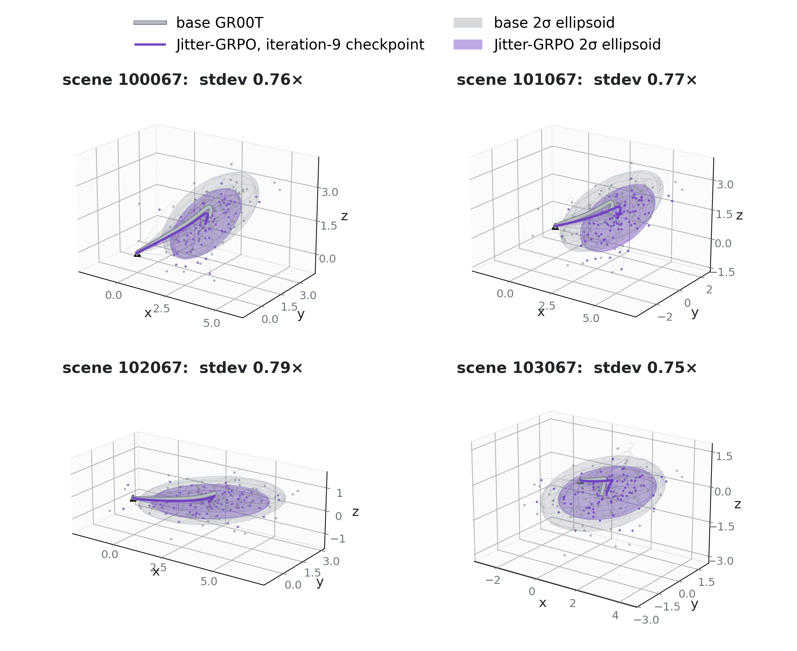
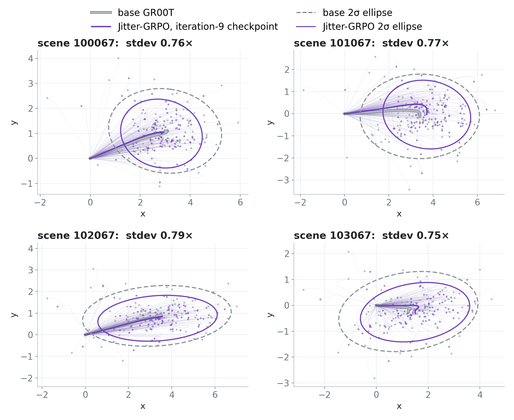
| Kitchen | stdev x | stdev y | stdev z | Combined stdev, $\sqrt{\sigma_x^2 + \sigma_y^2 + \sigma_z^2}$ |
|---|---|---|---|---|
| 100067 | 1.12 → 0.81 | 0.84 → 0.69 | 0.94 → 0.74 | 1.69 → 1.29 (0.76×) |
| 101067 | 1.34 → 0.99 | 0.95 → 0.77 | 1.05 → 0.83 | 1.95 → 1.50 (0.77×) |
| 102067 | 1.71 → 1.37 | 0.70 → 0.53 | 0.56 → 0.36 | 1.93 → 1.51 (0.79×) |
| 103067 | 1.34 → 1.05 | 0.77 → 0.57 | 0.83 → 0.56 | 1.75 → 1.32 (0.75×) |
| Average | 1.38 → 1.06 | 0.82 → 0.64 | 0.84 → 0.62 | 1.83 → 1.41 (0.77×) |
| Kitchen | Noise passed through ($\beta$), base GR00T → checkpoint |
|---|---|
| 100067 | 0.50% → 0.38% (0.75×) |
| 101067 | 0.57% → 0.33% (0.58×) |
| 102067 | 0.61% → 0.35% (0.57×) |
| 103067 | 0.68% → 0.56% (0.83×) |
| Average | 0.59% → 0.40% (0.68×) |